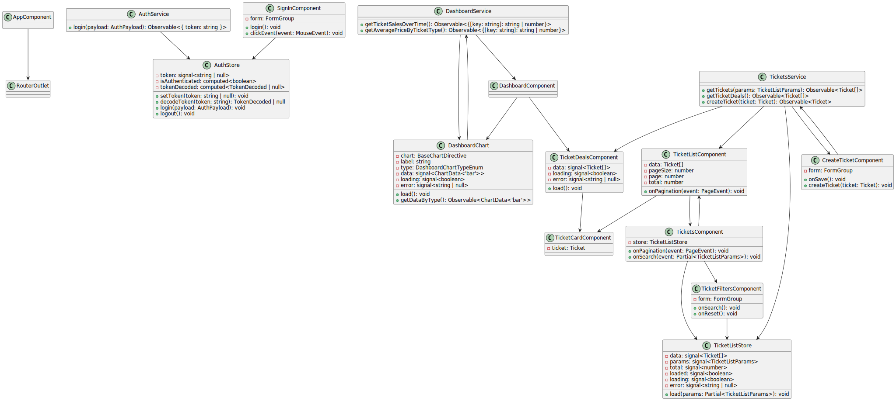
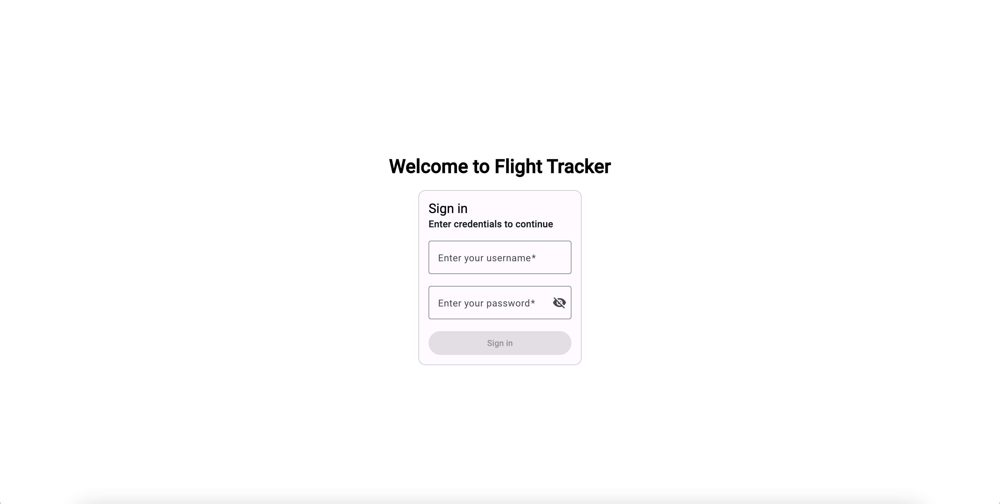
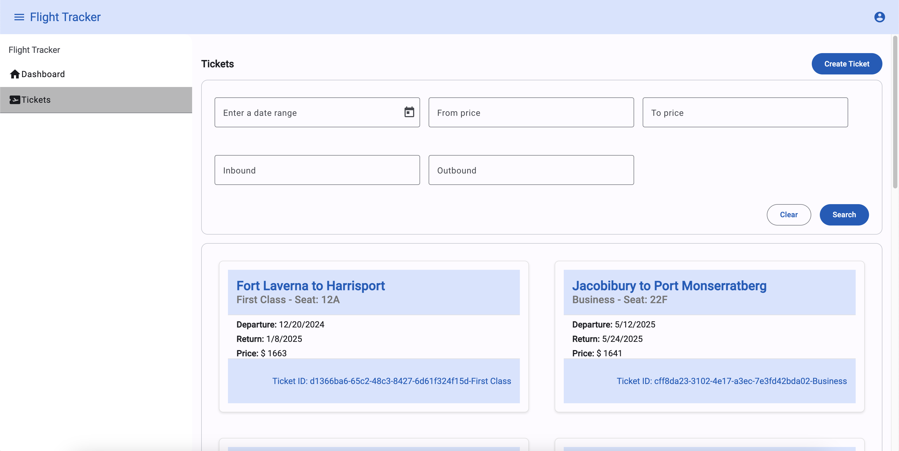
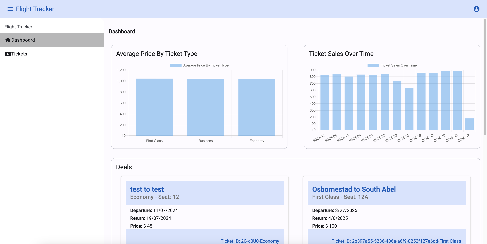

Flight Tracker
Overview
Flight Tracker is an Angular application for managing and tracking flight tickets. The application supports two roles: Admin and User. Users can view and filter tickets, while Admins have additional privileges, including the ability to create multiple tickets simultaneously without redirection.
Features
- Login Page: Users can log in with roles Admin and User.
- User Role:
- View all tickets.
- Filter tickets.
- View dashboard
- Admin Role:
- Same privileges as User.
- Create multiple tickets in the same form without redirection.
- Ticket Fields:
idinboundoutboundticket_typeticket_type_id(combination of the id and ticket_type)pricefrom_dateto_dateordate_rangeseat_number
- Validation:
- No duplicate tickets for the same inbound, outbound, from, to, and seat_number values.
- Price should be a positive number.
- From date should be before the to date.
- Dashboard:
- Average Price By Ticket Type: Average price of tickets by ticket type.
- Ticket Sales Over Time: Number of tickets sold over time.
- Deals: Special deals for users.
- Chart: Visualization based on ticket data.
Others
- Window Communication: Actions on one window reflect on another window on auth part.
Prerequisites
- Node.js (v20 or above)
- npm (v10 or above)
- Angular CLI (v18.1.1)
- json-server (v0.17.0)
Setup
- Clone the repository:
git clone https://github.com/your-repo/flight-tracker.git
cd flight-tracker- Install dependencies:
npm install
cd json-server && npm installRunning the Application
Angular Development Server
- Start Angular development server:
npm start- Open your browser and navigate to
http://localhost:4200.
JSON Server
Example :cd json-server && npm run dev- Run migrations optionally:
cd json-server && npm run migrateThe JSON Server will be running on http://localhost:3000.
UML Diagram
Flight Tracker UML Diagram

Documentation
Generate documentation using Compodoc:
- Generate documentation:
npm run compodoc- Serve the documentation:
npx compodoc -s- Open your browser and navigate to
http://localhost:8080to view the documentation.
Functionalities
- Login Page: Authenticate as Admin or User. 
- View and Filter Tickets: Users and Admins can view and filter tickets. 
- Create Tickets: Admins can create multiple tickets without redirection.

- Validation: Ensure no duplicate tickets are created.
- Charts: Visualize data such as revenue by ticket type, ticket sales over time, and average ticket price by ticket type. 